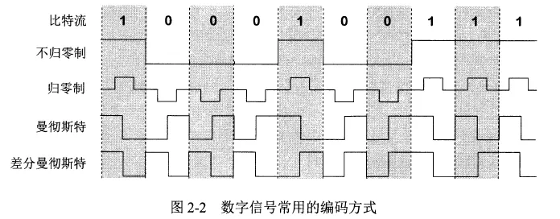
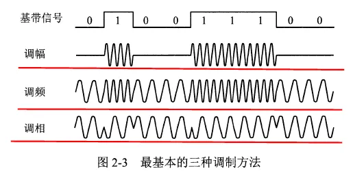
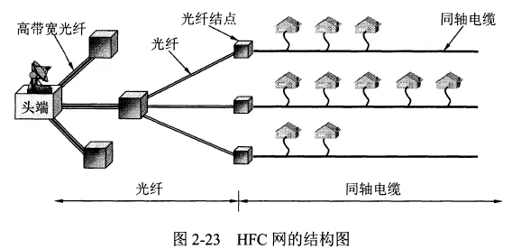

物理层
- TAGS: Network
物理层的基本概念
物理层关注的是如何在连接各种计算机的传输媒体上传输数据流。物理层的任务是尽可能屏蔽掉不同传输媒体和通信手段间的差异，使链路层感受不到这种差异。
物理层的主要任务：确定与传输媒体的接口有关的一些特性：
- 机械特性：指明接口所用接线器的形状、尺寸等机械特性。
- 电气特性：指明接口电缆的各条线上的电压的范围。
- 功能特性：指明电线上某一电平的电压的意义。
- 过程特性：指明不同功能的各种可能事件的出现顺序。
数据在计算机内部一般是并行传输，但在通信线路上是串行传输，所以物理层还要完成传输方式的转换。
物理层协议很多，因为物理连接的方式很多，传输媒体的种类也很多。
数据通信的基础知识
数据通信系统的模型
一个数据通信系统可划分为源系统、传输系统、目的系统，或称为发送端、传输网络、接收端。
源系统包括源点和发送器。典型的发送器是调制器。
目的系统包括接收器和终点。典型的接收器是解调器。
通信的目的是传送消息，数据是运送消息的实体，信号是数据的电气或电磁的表现。
信号可分为模拟信号和数字信号。
有关信道的几个基本概念
信道不等于电路，信道表示向某一方向传送信息的媒体，一条通信电路通常包含一条发送信道和一条接受信道。
通信方式
- 信息交互有以下三种基本方式：
- 单向通信，又称单工通信。如有线电广播等。需要一条信道。
- 双向交替通信，又称半双工通信。需要两条信道。
- 双向同时通信，又称全双工通信。需要两条信道。
调制
- 来自信源的信号成为基带信号，因为基带信号中包含较多低频成分，而许多信道不能传输低频分量和直流分量，所以需要对基带信号调制。
- 调制可分为两大类：
- 基带调制：将数字信号转换为另一种数字信号。又称编码。
- 带通调制：将基带信号的频率范围转换为另一频段，并化为模拟信号。
常用编码方式

- 不归零制：正电平代表1，负电平代表0。
- 归零制：正脉冲代表1，负脉冲代表0。
- 曼彻斯特编码：位周期中心的向上跳变代表0，向下跳变代表1。
- 差分曼彻斯特编码：每一位的中心都有跳变。位开始的边界有跳变代表0，没有代表1。
- 曼彻斯特码的频率比不归零制高，但有自同步能力，即可以从信号波形自身中提取信号时钟频率。
- 基本带通调制方法

信道的极限容量
数字通信的优点：信号在信道上传输时必然会失真，但只要能识别出原有信号，就没有影响。
传输速率越高，或距离越远，或噪声越大，失真就越严重。
信道能通过的频率范围
- 信道中码元传输的速率有上限，超过上限会出现严重的码间串扰问题，接收端无法识别编码。
- 信道的频带越宽，能通过的高频分量越多，最大速率越高。
信噪比
- 信号的平均功率与噪声的平均功率之比，写作 S/N，单位是分贝（dB）
- 信噪比 = 10 log10(S/N)。
香农公式
- 信道的极限传输速率 C = W log(2+S/N)。
- 香农公式表明带宽越大，信噪比越大，极限传输速率越高。还表明只要信息传输速率低于信道的极限速率，就一定可以实现无差错传输，但方法未知。
- 另一种提高传输速率的方法：通过编码让每个码元携带更多比特的信息。
物理层下面的传输媒体
传输媒体分为导引型和非导引型两大类。
导引型中电磁波沿着固体媒体传播，非导引型中传输媒体就是自由空间，又称无线传输。
导引型传输媒体
导引型传输媒体有架空明线，双绞线，同轴电缆，光纤等。 光纤的传输带宽远大于其他传输媒体的带宽。
非导引型传输媒体
利用无线信道进行传输是运动中通信的唯一手段。
短波通信质量较差，速率较低。无限电微波通信可传输电话、图像、数据等信息。紫外线及更高波段目前还不能用于通信。
卫星通信的优点是通信距离远，缺点是传播时延高，保密性差。
信道复用技术
信道复用：多个发送端使用同一条信道来传输信息。
发送端使用复用器将不同的信息合起来传输，接收端使用分用器将信息分开。
频分复用、时分复用和统计时分复用
三种复用：
- 频分复用FDM：每个用户分配一个频带，通信中始终占用该频带。用户在同样时间占用不同的频带。
- 时分复用TDM：将时间划分为等长的帧，每个用户在每个帧中占用其中一个固定序号的间隙。用户在不同时间占用同样的频带。
- 因为计算机数据的突发性，时分复用的信道利用率比较低。
- 统计时分复用STDM：一种改进的时分复用，又称异步时分复用。STDM不是固定分配时隙，而是按需动态地分配时隙。
波分复用
波分复用WDM就是光的频分复用。
一根光纤上可以复用几十路甚至更多的光载波信号。光信号传输一定距离后会衰减，因此需要使用光纤放大器放大后继续传输。
码分复用
码分复用CDM：不同用户使用不同码型，在同样时间使用同样的频带通信。
如对某一个用户，序列00011011表示比特1,11100100表示比特0。其他用户的码片序列必须与此用户的序列相互正交。
码分复用实际上是一种扩频通信。无线局域网中常用CDM。
数字传输系统
数字通信相比模拟通信，在传输质量和经济上都更好。
光纤是长途干线最主要的传输媒体。
同步数字序列 SDH 和同步光纤网 SONET 是当前最主要的数字传输国际标准。简称 SONET/SDH 标准
宽带接入技术
用户连接到互联网，要先连接到某个 ISP，以便获得上网所需的 IP 地址。
宽带接入网是接入网的一种，即一种用来把用户接入到互联网的网络。
宽带接入可分为有线宽带接入和无线宽带接入。
ADSL技术
非对称数字用户线 ADSL 技术是用数字技术对现有的模拟电话用户线进行改造，使其能够承载宽带数字业务。
标准模拟电话信号的频带在 300~3400Hz 范围，ADSL技术将 4000Hz 以下的频带留给传统电话，4000Hz 以上用于上网。
因为用户一般都是下载，ADSL 的下行带宽（从 ISP 到用户）远大于上行带宽，所以叫做非对称。
ADSL 的好处是可以利用现有的电话线，缺点是传输距离有限，并且不能保证固定的数据率。ADSL 的速率依赖于用户线的质量、长度、线径等。
ADSL在用户线（铜线）的两端各安装一个ADSL解调器。采用基于频分复用的 DMT 调制技术，将 4kHz 以上的频带划分为许多子信道，其中 25 个子信道用于上行，249 个子信道用于下行。
类似 ADSL 还有许多其他 xDSL 技术，速度更快，但在国内应用较少。
光纤同轴混合网(HFC网)
光纤同轴混合网（HFC网）是基于有线电视网开发的一种宽带接入网。
为提高传输的可靠性和质量，HFC网将原有线电视网的同轴电缆主干部分改换为了光纤。
光纤从头端连接到光纤结点，在光纤结点处光信号转换为电信号，连接到一个光纤结点的典型用户数为500。
光纤节点与头端的典型距离为 25km，到用户的距离不超过 3km。

用户通过电缆调制解调器来使用 HFC 网，它比 ADSL 中的解调器复杂很多，因为要解决共享信道中的冲突问题。
使用 HFC 网的数据率大小不确定，它取决于这段电缆上有多少个用户正在传送数据，如果有很多人在用，每个人的速率会很慢。
FTTx技术
光纤到户 FTTH(Fiber To The Home) 是把光纤一直铺设到用户家庭，在光纤进入用户家中后才把光信号转换为电信号，这样的上网速率最快。
现在信号在陆地上的长距离传输基本都是使用的光缆，在 ADSL 和 HFC 中长距离传输也是用的光缆。
多个用户通过光配线网共享一根光纤干线，光配线网使用波分复用，上行和下行使用不同的波长。
出光纤到户 FTTH 外，还有光纤到大楼 FTTB，光纤到楼层 FTTF 等，一般运行商所说的光纤到户并非真正的 FTTH。